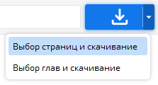
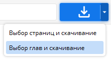

Примеры для нескольких URL-адресов:
123, 125, 126
123 125 126
Номера, отсутствующие в Hitomi.la, автоматически преобразуются в URL-адрес E(x)Hentai.
Сохранение
Сохранение добавленных в данный момент параметров и задач.
Файл - Сохранение
Клавиша [Ctrl + S]
Поисковик
Поиск галерей
Меню - Поисковик...
Клавиша [Ctrl + F]
Задачи загрузчика
Откройте первый файл:
Щёлкните правой кнопкой мыши → [Открыть первый файл]
Нажмите на миниатюру
Дважды щёлкните
Клавиша [Enter]
Удаление нескольких задач:
Выбор нескольких задач → клавиша [Del]
Удаление нескольких файлов:
Выбор нескольких задач → Правая кнопка мыши → [Удалить файлы]
Выбор нескольких задач → клавиша [Shift] + [Del]
Удалить все завершённые задачи:
Щёлкните правой кнопкой мыши → [Удалить все завершённые задачи]
Удалите все завершённые задачи, которые не заблокированы.
Цвета задач
Светло-серый: Ожидание или чтение
Тёмно-серый: Скачивание
Зелёный: Скачано полностью
Оранжевый: Скачано не полностью
Красный: Ошибка или недействителен
Изменение порядка выполнения задач
Для изменения порядка перетаскивания используйте кнопку с колёсиком мыши.
Также работают следующие команды: [Ctrl + ↑], [Ctrl + ↓], [Ctrl + Home], [Ctrl + End].
Фильтрация списка задач
Щёлкните на значке фильтра в левой нижней части окна загрузчика и введите.
Видны только те задачи, название которых содержит это слово.
Можно также отфильтровать по типу, например "type:youtube".
Если ввести "dup:", то будут показаны только идентичные задачи.
Введите "rem:", чтобы увидеть только те задачи, которые были удалены из физического хранилища.
Вы можете фильтровать по меткам, например "tag:glasses".
Можно отфильтровать по комментариям, например, "comment:xxxx".
Введите "bad:", чтобы показать только незавершённые задачи.
Сужение списка поиска в поисковике
Щёлкните на значке фильтра в левом нижнем углу списка поисковика и введите.
Будут отображаться только те галереи, которые содержат эту строку в названии, авторе, группе, метке и языке.
"title:A" : Показывать только галереи со строкой A в названии.
"artist:A", "group:A", "tag:A", "lang:A" : Это также можно сузить.
"p<100" : Показывать только галереи, содержащие менее 100 страниц.
"p>100" : Показывать только галереи, содержащие более 100 страниц.
"done:o" : Показывать только скачанные галереи.
"done:x" : Показывать только те галереи, которые ещё не были скачаны.
Выбор страницы для скачивания

Выбор страницы для скачивания.
Примеры:
~ 100 → : Первые 100 страниц
-100 ~ → : Последние 100 страниц
1, 10 ~ 20, -1 → : Первая страница, страницы 10-20, последняя страница
Выбор главы для скачивания

Выбор главы для скачивания.
Настройки программы
Настройки → Параметры
Потоки
Параллельное скачивание на одну задачу.
Меньше, если компьютер не обладает хорошей производительностью или хорошим подключением к Интернету.
Если вы не уверены в правильности этой настройки, сохраните значения по умолчанию.
Скачивание нескольких галерей :
Выберите несколько → щёлкните правой кнопкой мыши → [Скачать].
Выберите несколько → клавиша [Enter]
Информация о галерее:
Щёлкните правой кнопкой мыши → Информация...
Нажмите по миниатюре
Прерывание поиска
Снова нажмите на кнопку поиска.
Файлы скачиваются некорректно (проблемы с чтением контрольной суммы)
Рекомендовано (пониженная скорость) :
Отрегулируйте количество потоков в меньшую сторону.
Устаревшее (не снижает скорость, возможны проблемы с безопасностью) :
Панель управления → Оборудование → Диспетчер устройств → Сетевые адаптеры → Любой из контроллеров → Щёлкните правой кнопкой мыши «Свойства» → Дополнительно → Установите для всех отношений загрузки значение «Отключено» → OK
После непродолжительного ожидания вы будете вновь подключены к Интернету.
Обновление поисковых данных поисковика
Поисковик - Меню - Загрузка данных...
При каждом скачивании загружаются самые свежие данные.
Скрипты
Инструменты - Импорт скрипта...
Выполнение скрипта python.
Вы также можете создавать собственные скрипты загрузки для использования.
Файлы скриптов (*.hds) можно редактировать в любом текстовом редакторе (Notepad++).
Файлы скриптов можно перетаскивать в приложение и выполнять.
Создайте папку для скрипта по пути исполняемого файла и поместите туда файл скрипта (*.hds), который будет автоматически запускаться при запуске.